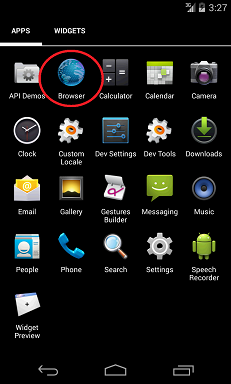
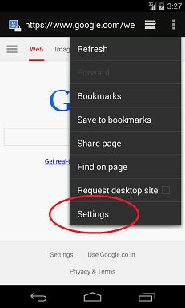
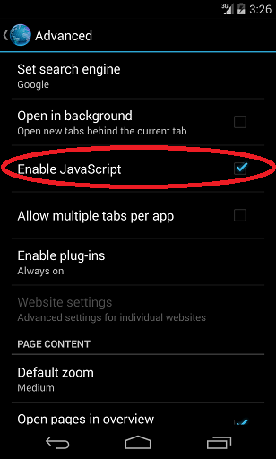

Java is a computer programming language.
No. You cannot enable Java or install Java Plugin in a smartphone browser. Also Smartphone browsers do not support Applets(Applet is a small application which runs on browsers with the help of Java). If you really need to use a Java Plugin, use it on a Desktop PC or on a MAC.
JavaScript is an object-oriented computer programming language commonly used to create interactive effects within web browsers.
You need to enable JavaScript if you are having difficulty loading websites with interactive elements such as shopping carts or if a website is requesting you to enable JavaScript to load some kind of interactive elements.
By default, all Android browsers have JavaScript turned on. If yours got turned off by accident, or you toggled it off and forgot how to toggle it back, see the steps below to learn how to turn it back on.
Step 1. Open your default browser('Internet' or 'Browser') and click on the top right Menu(options).
Step 2. Click on 'Settings', then click on 'Advanced'.
Step 3. Check the 'Enable JavaScript' option if it is unchecked.
Note: If you are using Google Chrome follow the below steps:
Step 1. Open Chrome and click on the top right Menu(options).
Step 2. Click on 'Settings', then click on 'Content Settings'.
Step 3. Check the 'Enable JavaScript' option if it is unchecked.